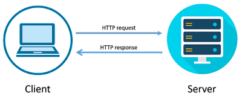
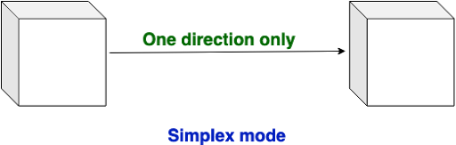

What is Internet?
Network: When two or more computers are connected with wired and wireless and share their resources(in the form of Images, Videos, etc) it is called a Network.
* The real meaning of Network/Internet is "Sharing".
->Few important Point
- The Network is created by the Fiber Optic Cable across the world.
- Through these cables transfer data from one end to another at almost the speed of light. (The speed of light approx 3 lakh Kilometer/second).
- Internet is a worldwide global system of interconnected computer networks.
- Internet uses the standard Internet Protocol (TCP/IP).
- Every computer on the internet is identified by a unique IP address.
- IP Address is a unique set of numbers (such as 192.168.1.1) that identifies a computer location.
- A special computer DNS (Domain Name Server) is used to give a name to the IP Address so that the user can locate a computer by a name.
- For example, a DNS server will resolve a name www.lovecomputer.co.in to a particular IP address to uniquely identify the computer on which this website is hosted.
- Internet is accessible to every user all over the world.
Diagram of Internet: how the Internet works
There are three types of Networks:
1. Internet: The network formed by the cooperative interconnection of millions of computers, linked together is called the Internet.
2. Intranet: It is an internal private network built within an organization using the Internet and World Wide Web standards and products that allow employees of an organization to gain access to corporate information.
3. Extranet: It is the type of network that allows users from outside to access the Intranet of an organization.
There are three types of data communications mode in a network:-
1. Simplex Mode: In simplex mode data only go to one way. Example: Radio, Television (इस तरीके में जानकारी सिर्फ एक ही तरफ़ जाती है)
2. Half Duplex Mode: In Half Duplex mode sender can send the data and also can receive the data but one at a time. It is two-way directional communication but one at a time. Example: Walkie- talkie, physical example: Post office (इस तरीके में जानकारी एक समय में एक ही तरफ से दूसरी तरफ जाती है)

3. Full Duplex Mode: In Full Duplex mode, Sender can send the data and also can receive the data simultaneously. It is two-way directional communication simultaneously. Example: Mobile, landline Phone. physical example: face to face (इस तरीके में जानकारी एक ही समय में एक तरफ से दूसरे और दूसरी तरफ से पहली तरफ जा सकती है)

Protocol (नियम):
There are many rules in the Internet network system like any other system through which it runs smoothly and makes this system good and fair.
This network works on OSI(open system interconnect) Model.